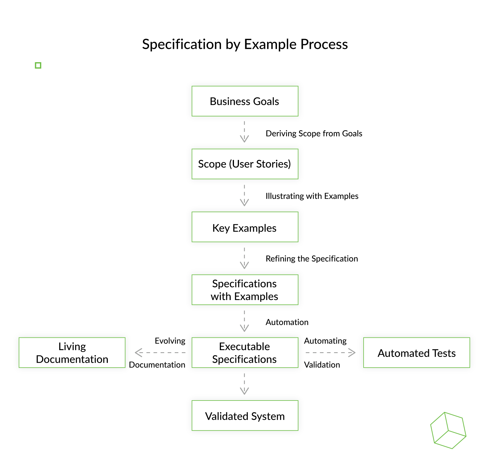

Specification by example on tõhus meetod tarkvaranõuete määratlemiseks, kasutades abstraktsete kirjelduste asemel konkreetseid näiteid. See parandab koostööd sidusrühmade, arendajate ja testijate vahel, tagades nõuete selguse ja testitavuse.

Eelised
Case Vahendi kasutus